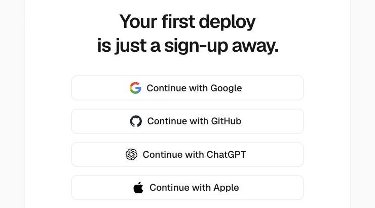
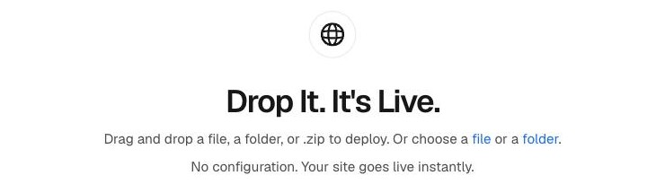
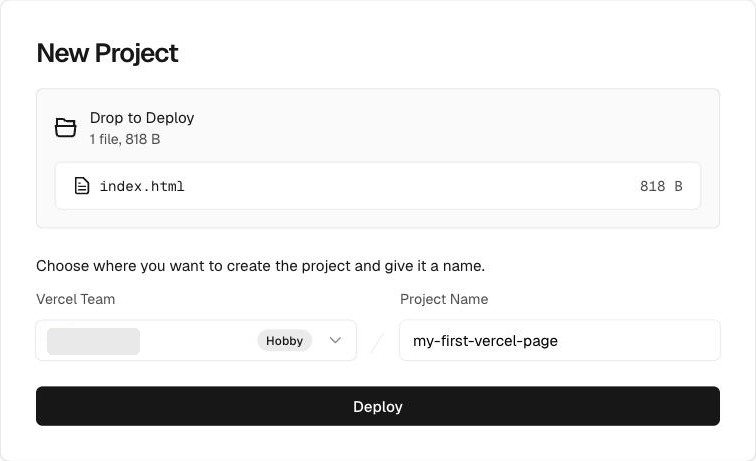
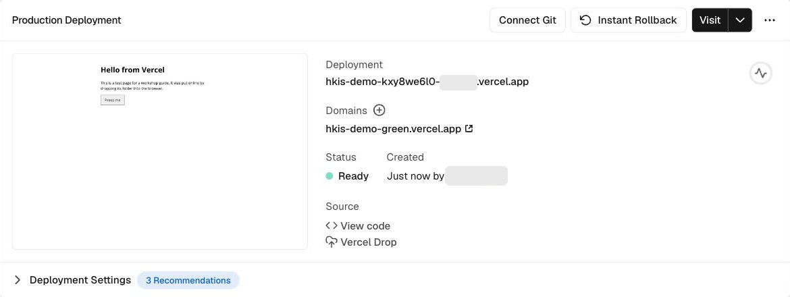
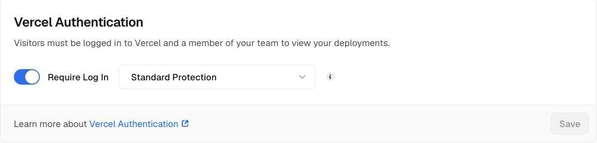
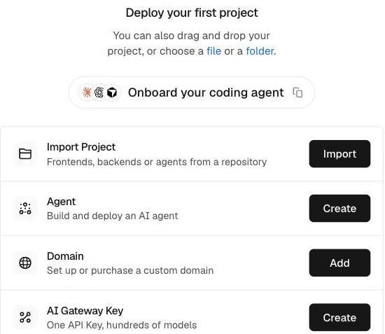
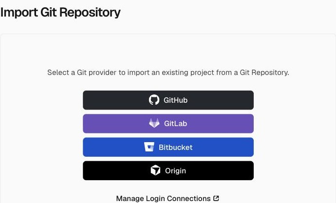

Vercel
Vercel is a website host. You give it your tool’s files, and it gives you a web address that students can open on any device. Hand it a folder and it is live in a minute. Connect it to GitHub and every change you save goes live by itself, with a preview link first.
Best for
A tool you will keep changing, or one that needs a hidden key. A plain index.html works too. For a single page that rarely changes, GitHub Pages is simpler.
Start here
vercel.com
The free Hobby plan is enough to start. Read “What to know first” before you use it for school work.
This guide is a draft. Screenshots marked “to come” are still to be taken, and anything tagged TBC still needs checking.
Why use Vercel?
A tool on your laptop is only yours. For students to use it, its files have to sit on a computer that is always on, at a web address. That is what publishing means. GitHub Pages does it for free, and for a one-page tool it is the simplest way. Vercel does the same job, and four things more.
What Vercel adds
- Try a change before students see it. Every change on a separate branch gets its own preview link, and the live version stays as it was until you are happy. GitHub Pages publishes one version at a time.
- Keep a secret. A tool that calls an AI service needs a key, and a key written into a web page can be read by anyone who opens it. On Vercel you keep the key in a setting, and write a small piece of code, called a function, that runs on Vercel’s computers and uses it. Visitors never see the key. GitHub Pages can only hand out files: it has nowhere to run code.
- Publish without GitHub, or keep your code private. You can drag a folder into your browser and be live, with no GitHub at all. And on a free GitHub account, GitHub Pages needs a public repository, while Vercel can publish from a private one in your own account.
- Grow without changing host. When a tool becomes a project with many files that must be built before it runs, such as one made with Next.js or Vite, Vercel recognises it and builds it for you. A plain page never needs this.
Vercel or GitHub Pages?
| Feature | GitHub Pages | Vercel (free Hobby plan) |
|---|---|---|
| What it publishes | HTML, CSS and JavaScript files | The same, plus code that runs on a server, and projects that need building |
| How you publish | Put the files in a GitHub repository | Drag a folder into your browser, or connect a GitHub repository |
| Try a change first | No: one version is live at a time | Yes: a preview link for every branch |
| Keep a secret key | No: there is no server to keep it on | Yes: as an environment variable |
| Private source code | Only with a paid GitHub plan | Yes, for a repository in your own account |
| The rules | Not for running a business | Non-commercial, personal use only |
| Free limits | A 1 GB site; about 100 GB of data a month | 100 GB of data a month; 1 million requests |
One page that rarely changes: use GitHub Pages. Choose Vercel when you want to test changes first, need a secret key, want your code private, or your project has outgrown a few files.
What to know first
Vercel’s free Hobby plan is for non-commercial, personal use only. Its fair use guidelines call a site commercial if it is used for anyone’s financial gain, “including a paid employee or consultant writing the code”. A classroom tool sells nothing, but a paid employee writes it, so ask Vercel Support, and check with HKIS, before you rely on the free plan for school work. TBC
On the free plan, Vercel may use your code, and your chats with its own AI, to train AI models unless you opt out. Vercel says it removes names, emails, account details and keys first. To opt out, open Settings, choose General, scroll to Data Preferences, turn off Improve models with my data, and press Save. Do this before you upload anything that holds students’ work.
- Public by default. Your live address is public: anyone with the link can open it. Vercel protects the other addresses, such as previews, with a login. Keep students’ names and personal information out of anything you publish.
- Hong Kong. Vercel has no list of supported regions, unlike Claude and ChatGPT: its terms only bar countries under trade sanctions. The presenter signed up and signed in from Hong Kong without a problem.
Exercise 1: Sign up

- Go to vercel.com and choose Sign Up.
- Continue with GitHub, so Vercel can see your repositories later. Google, Apple or email work too: you can connect GitHub afterwards, in Exercise 4.
- Vercel may ask you to secure your account with two-factor authentication. It recommends an authenticator app on your phone. Set one up, or choose Skip securing my account.
Exercise 2: Put your tool online
The quickest way is to drag your tool’s folder into your browser. You need no GitHub and nothing installed.

- Put your tool in a folder of its own, with its main file named index.html. A single file, or a .zip, works too.
- Go to vercel.com/drop.
- Drag your folder onto the page. Or press folder, and choose it.
- Choose your own account as the team, and type a name for the project, or keep the one Vercel suggests. The name becomes part of your web address.
- Press Deploy.

If your main file isn’t called index.html, Vercel asks which page people should see first. Pick yours from the Root (/) menu.
Exercise 3: Open your link
When it finishes, Vercel shows a Congratulations page. Press Continue to Project to see your project’s page.

- Press Visit, or click the address under Domains. It starts with your project’s name and ends in vercel.app. If the plain name is taken, Vercel adds a word, as in hkis-demo-green.vercel.app.
- Try your tool, then send that address to a colleague to test.
Your project lists two kinds of address. The short one under Domains is public: anyone can open it. The long one under Deployment, with random letters in it, belongs to one version of your tool and is protected: visitors are asked to log in to Vercel. Always send the short one.
A new project starts with Vercel Authentication on, set to Standard Protection. That protects every address except your live one. You can check it in the project’s Settings, under Deployment Protection.

A dropped project has no link to GitHub, so saving a change somewhere else does not update it. To update it, drag the folder again, this time anywhere on the project’s page. For changes that publish themselves, go on to Exercise 4.
Exercise 4: Connect GitHub
If your tool will keep changing, put it in a GitHub repository and connect Vercel to it. After that, every change you send to the repository is published by itself. The GitHub Pages guide shows how to make a repository and keep it up to date with GitHub Desktop.
Already put your tool online with Drop? On its project page, press Connect Git instead of importing it again. TBC


- On your dashboard, press Import next to Import Project. Once you have projects, choose Create New at the top right, or go straight to vercel.com/new. TBC
- Under Import Git Repository, choose GitHub, and let Vercel see your repositories.
- Find your tool’s repository and press Import. Not listed? Choose Configure GitHub App, and let Vercel see it.
- Press Deploy. For a plain index.html, leave the settings as they are: Vercel chooses Other, and that works.
Vercel’s GitHub app asks for wide permissions on the repositories you give it: it can read and change their code, pull requests and deployments. If GitHub offers a choice, pick Only select repositories, and choose just your tool’s. TBC
A private repository in your own GitHub account works on the free plan. One owned by a GitHub organisation does not: Vercel asks you to make it public, or to upgrade.
Exercise 5: Change it, then preview it
Send a change to the main branch, and Vercel puts it live. Send it to another branch instead, and Vercel makes a preview link, so you can test it before it replaces the live version.
Screenshot to come
A project’s Deployments list, with the live version and a preview for a change, and the preview marked 16.
- In GitHub Desktop, open the Current Branch menu and choose New Branch. Change your tool, commit, and publish the branch.
- In Vercel, open your project, then Deployments. The newest one is your preview. Open it and test.
- Happy? Merge the branch into main. Vercel then makes the change live.
A preview link is protected like the long address in Exercise 3: a visitor is asked to log in to Vercel. To let a colleague test a preview without a login, make a Shareable Link: open the deployment, press Share, and choose the option that makes it public (Vercel’s documentation calls it Anyone with the link). The free plan allows one Shareable Link in total. TBC
Push it further
Ideas for when your first tool is live.
My tool calls an AI service with an API key that is written into the page. Move that call into a function in an api folder, read the key from an environment variable called AI_KEY, and tell me where to add the key in Vercel.
Not yet tested. TBC
Use your own web address: in your project, open Settings, then Domains, and choose Add Domain. You can bring one you own or buy one there.
Keep a project to yourself while you work on it: in the project’s Settings, open Deployment Protection, and change Standard Protection to All Deployments. Then even the short address asks for a Vercel login.
Videos
Each video loads only when you press play. The first is from Vercel itself. The others are from independent creators.
Vercel deploys a plain HTML, CSS and JavaScript site from a template, then shows what happens when you push a change to Git (from 3:53). It is older than this guide, so some screens look different now.
A short look at preview deployments: a live test version of your project for every update, and how to share it.
Adding a domain you already own to a Vercel project, and setting its DNS records with the company you bought it from.